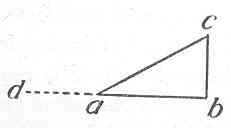

Kant: AA XIV, Physik und Chemie. , Seite 150 |
|||||||
Zeile:
|
Text:
|
|
|
||||
| 01 | Anfang aller Geschwindigkeit ist das moment der acceleration. Das | ||||||
| 02 | moment hat keine Geschwindigkeit, sondern bringt in einer gewissen Zeit | ||||||
| 03 | eine Geschwindigkeit hervor. Wenn die Zeiten gleich seyn, so verhalten | ||||||
| 04 | die Räume wie die momenta. (Wenn die Zeiten verschieden Räume gleich | ||||||
| 05 | seyn, so verhalten sich die Momente umgekehrt wie die qvadrate der Zeiten). | ||||||
| 06 | Wenn die qvadrate der Zeiten sich umgekehrt verhalten wie die Momente, | ||||||
| 07 | so sind die Räume gleich. | ||||||
| 08 | Zwischen dem vorhergehenden und dem folgenden Absatz: | ||||||
| 09 | (g Kein Zustand folgt unmittelbar auf den Andern, aber wohl | ||||||
| 10 | zwey reihen von Zuständen, nemlich die Bewegung durch die Linie ab | ||||||
| 11 | auf die in da. ) | ||||||
| 12 |  |
bc sey die gegebene Geschwindigkeit. Wenn der | |||||
| 13 | Korper in a schon diese Geschwindigkeit hatte, so | ||||||
| 14 | ware er in a nicht in Ruhe, sondern in Bewegung | ||||||
| 15 | gewesen*; also zwischen der Ruhe und der Geschwindigkeit | ||||||
| 16 | ist eine Zeit, in der alle kleinere Unterschiede der Geschwindigkeit | ||||||
| 17 | angetroffen werden. Alle Bewegung, so fern sie anfängt oder aufhört, | ||||||
| 18 | ein Moment der acceleration oder retardation, und das Maas des Moments | ||||||
| 19 | ist die Geschwindigkeit, die dadurch in derselben Zeit hervorgebracht wird. | ||||||
| 20 | *(g Der Augenblick der Ruhe muß von dem der Bewegung unterschieden | ||||||
| 21 | seyn. ) | ||||||
| [ Seite 149 ] [ Seite 151 ] [ Inhaltsverzeichnis ] |
|||||||
;){kind=link}